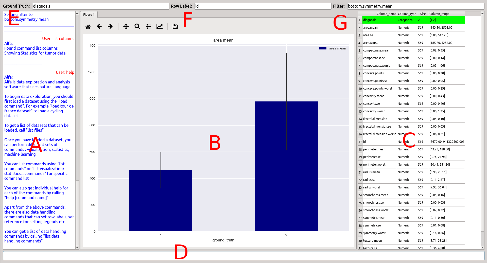

Click on the element below to open the side navigation menu.
Opening Alfa
Navigate to the directory where ALFA was downloaded
Windows
Double click on the file named ALFA_WIN
Linux/macOS
Open terminal and type the following commands
conda activate Alfarvis
python ./qt_run.pyTutorials
To learn more about ALFA, visit our wiki
Key Components of GUI
The components of the GUI are as follows:
|Component|Label|Description| |---------|------|----------| |Chat box | A |shows a history of user inputs and responses from Alfa | | Visualization window | B | visualizes plots requested by the user | | Table section | C | displays any tabular information printed by user | | User input | D | entry point for sending commands to Alfa | | Ground truth | E | shows the current reference variable/ground truth set by user | | Row label | F | row label set by the user| | filter | G | filter applied by the user |
In this tutorial, we will only deal with the chat box, user input, and table section to understand how to load a file into ALFA.
Basic Workflow
Once you open ALFA, the chat box will show a default help message describing the basic help commands. The figure and table windows will be empty since we did not load any data.
Loading Data
You can ask Alfa to load a data file by using the load command. Alfa has a flexible syntax. For example, all the commands below produce the same result:
load tumor
load tumoor data
open tumor data
Please load tumor csv file
Once the data is loaded, the table box shows the columns in the csv file along with the type of column and the range of data present in the column.
Load command supports more files than just csv files. You can load an image file using the same procedure
load phone image
will load an image from database and display it in the visualization window.
Getting Help
If you want to get help about using any particular commands supported by Alfa, you can ask for help using the help command. You can list all available commands using list commands. This should print a list of all available commands. If you want to know more about a specific command, you can ask help command [command name]. Alfa will search for the command and provide command specific help.
Basic commands
Some basic commands you can try
|Command|Description| |-------|-----------| |list | Can list columns in a csv, or list variables/files etc in history| |load | load data files/models/images/figures into history | |show | images in window| |summary| A summary of the data i.e mean, stdev, max etc for each column|